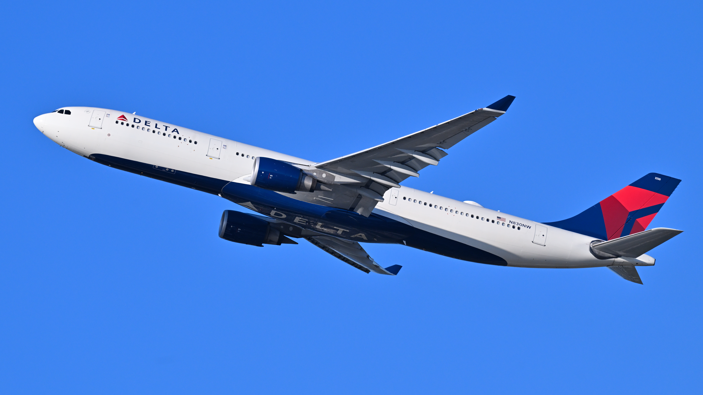
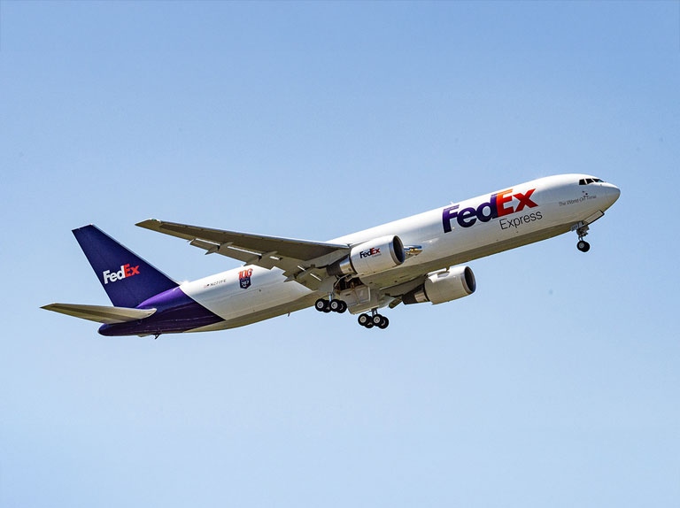

|
Flight Academy |
|
Flight Academy |
.jpg)

A narrowbody (or single-aisle) aircraft has just one aisle down the cabin, typically seating 3-6 passengers across, with a fuselage diameter usually around 3.5–4 meters — noticeably slimmer than a widebody's twin-aisle cabin. Narrowbodies are the backbone of short-to-medium-haul flying: domestic routes, regional international hops, and increasingly, thanks to newer engine technology, even some longer routes that once required widebodies. They're cheaper to operate per flight, faster to turn around at gates, and make up the large majority of aircraft in most airline fleets worldwide. The Airbus A320 and Boeing 737 MAX 7 sit at the "standard" size point within their respective families — not the smallest, not the largest — making them a natural side-by-side comparison.
| Aircraft | Seating Capacity | Range | Length | Wingspan | Cruise Speed | Fuselage | Engines |
|---|---|---|---|---|---|---|---|
| Airbus A220-300 | 120-190+ | 3,400 nmi | 38.7 m | 35.1 m | 38.7 m | Mach 0.78 | Pratt & Whitney PW1500G |
| Boeing 737 MAX 7 | 130-170+ | 3,850 nmi | 35.6 m | 35.9 m | Mach 0.79 | 35.5 m | CFM LEAP-1B |


A widebody (or twin-aisle) aircraft is any airliner wide enough to fit two separate aisles down the cabin, typically accommodating 7 to 10 seats across in economy class (compared to a narrowbody's single aisle and 3–6 seats across). This wider fuselage — usually 5 to 6 meters in diameter — allows for greater passenger capacity, more cargo volume beneath the cabin, and longer range capability, making widebodies the aircraft of choice for long-haul international routes, high-density regional trunk routes, and cargo operations. They sit at the opposite end of the size spectrum from narrowbodies like the A320 or 737, and typically require two engines (or historically four, as with the 747 and A380) mounted under the wings. Within the widebody category, the Airbus A330-300 and Boeing 767 represent two of the most enduring "mid-size" widebody families — aircraft that predate the composite-heavy A350/787 generation but remain heavily used today for medium-to-long-haul routes that don't need the size of a 777 or A350.
| Aircraft | Seating Capacity | Range | Length | Wingspan | Cruise Speed | Fuselage | Engines |
|---|---|---|---|---|---|---|---|
| Airbus A330-300 | 350-430+ | 6,350 nmi | 63.6 m | 60.3 m | Mach 0.82 | 5.28 m | Rolls-Royce Trent 700 |
| Boeing 767 | 269-340+ | 5,980 nmi | 54.9 m | 50.90 m | Mach 0.80 | 5.03 m | General Electric CF6-80C2 |